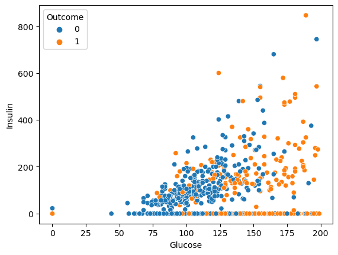
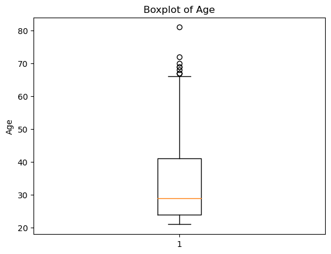
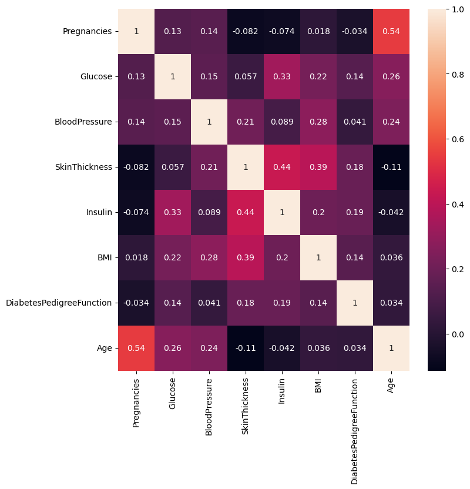

import numpy as np # library used for working with arrays
import pandas as pd # library used for data manipulation and analysis
import seaborn as sns # library for visualization
import matplotlib.pyplot as plt # library for visualization
%matplotlib inline
# to suppress warnings
import warnings
warnings.filterwarnings('ignore')
import statsmodels.api as sm # library for logistic regression
from sklearn.model_selection import train_test_split
from sklearn.metrics import confusion_matrix, roc_curve, auc#read csv dataset
pima = pd.read_csv("diabetes.csv") # load and reads the csv file
pima| Pregnancies | Glucose | BloodPressure | SkinThickness | Insulin | BMI | DiabetesPedigreeFunction | Age | Outcome | |
|---|---|---|---|---|---|---|---|---|---|
| 0 | 6 | 148 | 72 | 35 | 0 | 33.6 | 0.627 | 50 | 1 |
| 1 | 1 | 85 | 66 | 29 | 0 | 26.6 | 0.351 | 31 | 0 |
| 2 | 8 | 183 | 64 | 0 | 0 | 23.3 | 0.672 | 32 | 1 |
| 3 | 1 | 89 | 66 | 23 | 94 | 28.1 | 0.167 | 21 | 0 |
| 4 | 0 | 137 | 40 | 35 | 168 | 43.1 | 2.288 | 33 | 1 |
| ... | ... | ... | ... | ... | ... | ... | ... | ... | ... |
| 763 | 10 | 101 | 76 | 48 | 180 | 32.9 | 0.171 | 63 | 0 |
| 764 | 2 | 122 | 70 | 27 | 0 | 36.8 | 0.340 | 27 | 0 |
| 765 | 5 | 121 | 72 | 23 | 112 | 26.2 | 0.245 | 30 | 0 |
| 766 | 1 | 126 | 60 | 0 | 0 | 30.1 | 0.349 | 47 | 1 |
| 767 | 1 | 93 | 70 | 31 | 0 | 30.4 | 0.315 | 23 | 0 |
768 rows × 9 columns
# Logistic Regression
# x_train, x_test, y_train, y_test = train_test_split(pima.iloc[:,0:8], pima.iloc[:,8], test_size=0.2, random_state=42)
x_train, y_train = pima.iloc[:,0:8], pima.iloc[:,8]
x_train = sm.add_constant(x_train)
model = sm.GLM(y_train, x_train, family=sm.families.Binomial())
results = model.fit()
print(results.summary())
pima.iloc[:,8].mean() Generalized Linear Model Regression Results
==============================================================================
Dep. Variable: Outcome No. Observations: 768
Model: GLM Df Residuals: 759
Model Family: Binomial Df Model: 8
Link Function: Logit Scale: 1.0000
Method: IRLS Log-Likelihood: -361.72
Date: Mon, 03 Jul 2023 Deviance: 723.45
Time: 16:12:23 Pearson chi2: 836.
No. Iterations: 5 Pseudo R-squ. (CS): 0.2964
Covariance Type: nonrobust
============================================================================================
coef std err z P>|z| [0.025 0.975]
--------------------------------------------------------------------------------------------
const -8.4047 0.717 -11.728 0.000 -9.809 -7.000
Pregnancies 0.1232 0.032 3.840 0.000 0.060 0.186
Glucose 0.0352 0.004 9.481 0.000 0.028 0.042
BloodPressure -0.0133 0.005 -2.540 0.011 -0.024 -0.003
SkinThickness 0.0006 0.007 0.090 0.929 -0.013 0.014
Insulin -0.0012 0.001 -1.322 0.186 -0.003 0.001
BMI 0.0897 0.015 5.945 0.000 0.060 0.119
DiabetesPedigreeFunction 0.9452 0.299 3.160 0.002 0.359 1.531
Age 0.0149 0.009 1.593 0.111 -0.003 0.033
============================================================================================0.3489583333333333# Testing Logistic Regression
predictions = results.predict(x_train)array([[445, 55],
[112, 156]])binaryPreds = []
for pred in predictions:
if pred >= 0.9:
binaryPreds.append(1)
else:
binaryPreds.append(0)
array = []
for i in range(len(y_train)):
array.append((y_train.iloc[i], binaryPreds[i]))
incorrect = 0
for i in array:
if i[0]!=i[1]:
incorrect += 1
print(1-(incorrect/len(array)))
cm = confusion_matrix(y_train, binaryPreds)
print(cm)
print((cm[0][0]+cm[1][1])/cm.sum())0.67578125
[[496 4]
[245 23]]
0.67578125# finds the number of columns in the dataset
total_cols=len(pima.axes[1])
print("Number of Columns: "+str(total_cols))Number of Columns: 9pima.head(10)| Pregnancies | Glucose | BloodPressure | SkinThickness | Insulin | BMI | DiabetesPedigreeFunction | Age | Outcome | |
|---|---|---|---|---|---|---|---|---|---|
| 0 | 6 | 148 | 72 | 35 | 0 | 33.6 | 0.627 | 50 | 1 |
| 1 | 1 | 85 | 66 | 29 | 0 | 26.6 | 0.351 | 31 | 0 |
| 2 | 8 | 183 | 64 | 0 | 0 | 23.3 | 0.672 | 32 | 1 |
| 3 | 1 | 89 | 66 | 23 | 94 | 28.1 | 0.167 | 21 | 0 |
| 4 | 0 | 137 | 40 | 35 | 168 | 43.1 | 2.288 | 33 | 1 |
| 5 | 5 | 116 | 74 | 0 | 0 | 25.6 | 0.201 | 30 | 0 |
| 6 | 3 | 78 | 50 | 32 | 88 | 31.0 | 0.248 | 26 | 1 |
| 7 | 10 | 115 | 0 | 0 | 0 | 35.3 | 0.134 | 29 | 0 |
| 8 | 2 | 197 | 70 | 45 | 543 | 30.5 | 0.158 | 53 | 1 |
| 9 | 8 | 125 | 96 | 0 | 0 | 0.0 | 0.232 | 54 | 1 |
# finds the number of rows in the dataset
total_rows = len(pima.axes[0])
print("Number of Rows: "+str(total_rows))Number of Rows: 768print('The dimension of the DataFrame is: ', pima.ndim)The dimension of the DataFrame is: 2pima.size6912#The info() function is used to print a concise summary of a DataFrame.
#This method prints information about a DataFrame including the index dtype and column dtypes, non-null values and memory usage.
pima.info()<class 'pandas.core.frame.DataFrame'>
RangeIndex: 768 entries, 0 to 767
Data columns (total 9 columns):
# Column Non-Null Count Dtype
--- ------ -------------- -----
0 Pregnancies 768 non-null int64
1 Glucose 768 non-null int64
2 BloodPressure 768 non-null int64
3 SkinThickness 768 non-null int64
4 Insulin 768 non-null int64
5 BMI 768 non-null float64
6 DiabetesPedigreeFunction 768 non-null float64
7 Age 768 non-null int64
8 Outcome 768 non-null int64
dtypes: float64(2), int64(7)
memory usage: 54.1 KB# checking for missing values (null)
#functions that return a boolean value indicating whether the passed in argument value is in fact missing data.
# this is an example of chaining methods
pima.isnull().values.any()False#it can also output if there is any missing values each of the columns
pima.isnull().any()Pregnancies False
Glucose False
BloodPressure False
SkinThickness False
Insulin False
BMI False
DiabetesPedigreeFunction False
Age False
Outcome False
dtype: bool#excludes the outcome column
pima.iloc[:,0:8].describe()| Pregnancies | Glucose | BloodPressure | SkinThickness | Insulin | BMI | DiabetesPedigreeFunction | Age | |
|---|---|---|---|---|---|---|---|---|
| count | 768.000000 | 768.000000 | 768.000000 | 768.000000 | 768.000000 | 768.000000 | 768.000000 | 768.000000 |
| mean | 3.845052 | 120.894531 | 69.105469 | 20.536458 | 79.799479 | 31.992578 | 0.471876 | 33.240885 |
| std | 3.369578 | 31.972618 | 19.355807 | 15.952218 | 115.244002 | 7.884160 | 0.331329 | 11.760232 |
| min | 0.000000 | 0.000000 | 0.000000 | 0.000000 | 0.000000 | 0.000000 | 0.078000 | 21.000000 |
| 25% | 1.000000 | 99.000000 | 62.000000 | 0.000000 | 0.000000 | 27.300000 | 0.243750 | 24.000000 |
| 50% | 3.000000 | 117.000000 | 72.000000 | 23.000000 | 30.500000 | 32.000000 | 0.372500 | 29.000000 |
| 75% | 6.000000 | 140.250000 | 80.000000 | 32.000000 | 127.250000 | 36.600000 | 0.626250 | 41.000000 |
| max | 17.000000 | 199.000000 | 122.000000 | 99.000000 | 846.000000 | 67.100000 | 2.420000 | 81.000000 |
sns.displot(pima['BloodPressure'], kind='kde')
plt.show() 
# What is the BMI of the person having the highest glucose?
pima[pima['Glucose']==pima['Glucose'].max()]['BMI']661 42.9
Name: BMI, dtype: float64# mean
m1 = pima['BMI'].mean()
print(m1)
# median
m2 = pima['BMI'].median()
print(m2)
# mode
m3 = pima['BMI'].mode()[0]
print(m3)NameError: name 'df' is not defined# How many women's Glucose levels are above the mean level of Glucose
# mean() method finds the mean of all numerical values in a series or column.
v1 = pima[pima['Glucose']>pima['Glucose'].mean()].shape[0]
print(v1)
# count the number of women that have their 'BloodPressure' equal to the median of 'BloodPressure'
v2 = pima[pima['BloodPressure']==pima['BloodPressure'].median()].shape[0]
print(v2)
# and their 'BMI' less than the median of 'BMI'
v3 = pima[pima['BMI']<pima['BMI'].median()].shape[0]
print(v3)349
44
373pima1 = pima[(pima['BloodPressure']==pima['BloodPressure'].median()) & (pima['BMI']<pima['BMI'].median())]
number_of_women=len(pima1.axes[0])
print("Number of women:" +str(number_of_women))Number of women:22# Getting a pairwise distribution between Glucose, Skin thickness and Diabetes pedigree function.
sns.pairplot(data=pima,vars=['Glucose', 'SkinThickness', 'DiabetesPedigreeFunction'], hue = 'Outcome')
plt.show()
# Studying the correlation between glucose and insulin using a Scatter Plot.
sns.scatterplot(x='Glucose',y='Insulin',data=pima, hue = 'Outcome')
plt.show()
# The scatter plot above implies that mostly the increase in glucose does relatively little change in insulin levels
# It also shows that in some the increase in glucose increases in insulin.
# This could probably be outliers.
# Let us explore the possibility of outliers using the Box Plot.
# Boxplot is a way to visualize the five-number summary of the variable.
# Boxplot gives information about the outliers in the data.plt.boxplot(pima['Age'])
plt.title('Boxplot of Age')
plt.ylabel('Age')
plt.show()
# The box plot shows the presence of outliers above the horizontal line.
# Understanding the number of women in different age groups with diabetes.
plt.hist(pima[pima['Outcome']==1]['Age'], bins = 5)
plt.title('Distribution of Age for Women who has Diabetes')
plt.xlabel('Age')
plt.ylabel('Frequency')
plt.show()
# Of all the women with diabetes most are from the age between 22 to 30.
# The frequency of women with diabetes decreases as age increases.
# understanding the number of women in different age groups without diabetes.
plt.hist(pima[pima['Outcome']==0]['Age'], bins = 5)
plt.title('Distribution of Age for Women who do not have Diabetes')
plt.xlabel('Age')
plt.ylabel('Frequency')
plt.show()
# The highest number of Women without diabetes range between ages 22 to 33.
# Women between the age of 22 to 35 are at the highest risk of diabetes
# and also the is the highest number of those without diabetes.
# The IQR or Inter Quartile Range is a statistical measure for the variability in a given data.
# It is a methodology that is generally used to filter outliers in a dataset
Q1 = pima.quantile(0.25)
Q3 = pima.quantile(0.75)
IQR = Q3 - Q1
print(IQR)Pregnancies 5.0000
Glucose 41.2500
BloodPressure 18.0000
SkinThickness 32.0000
Insulin 127.2500
BMI 9.3000
DiabetesPedigreeFunction 0.3825
Age 17.0000
Outcome 1.0000
dtype: float64# Correlation is a statistic that measures the degree to which two variables move with each other.
corr_matrix = pima.iloc[:,0:8].corr()
corr_matrix| Pregnancies | Glucose | BloodPressure | SkinThickness | Insulin | BMI | DiabetesPedigreeFunction | Age | |
|---|---|---|---|---|---|---|---|---|
| Pregnancies | 1.000000 | 0.129459 | 0.141282 | -0.081672 | -0.073535 | 0.017683 | -0.033523 | 0.544341 |
| Glucose | 0.129459 | 1.000000 | 0.152590 | 0.057328 | 0.331357 | 0.221071 | 0.137337 | 0.263514 |
| BloodPressure | 0.141282 | 0.152590 | 1.000000 | 0.207371 | 0.088933 | 0.281805 | 0.041265 | 0.239528 |
| SkinThickness | -0.081672 | 0.057328 | 0.207371 | 1.000000 | 0.436783 | 0.392573 | 0.183928 | -0.113970 |
| Insulin | -0.073535 | 0.331357 | 0.088933 | 0.436783 | 1.000000 | 0.197859 | 0.185071 | -0.042163 |
| BMI | 0.017683 | 0.221071 | 0.281805 | 0.392573 | 0.197859 | 1.000000 | 0.140647 | 0.036242 |
| DiabetesPedigreeFunction | -0.033523 | 0.137337 | 0.041265 | 0.183928 | 0.185071 | 0.140647 | 1.000000 | 0.033561 |
| Age | 0.544341 | 0.263514 | 0.239528 | -0.113970 | -0.042163 | 0.036242 | 0.033561 | 1.000000 |
# 'annot=True' returns the correlation values
plt.figure(figsize=(8,8))
sns.heatmap(corr_matrix, annot = True)
# display the plot
plt.show()
# The closer the correlation is to 1, the more positively correlated they are;
# that is as one increases so does the other and the closer to 1 the stronger this relationship is.
# A correlation closer to -1 is similar,
# but instead of both increasing one variable will decrease as the other increases.